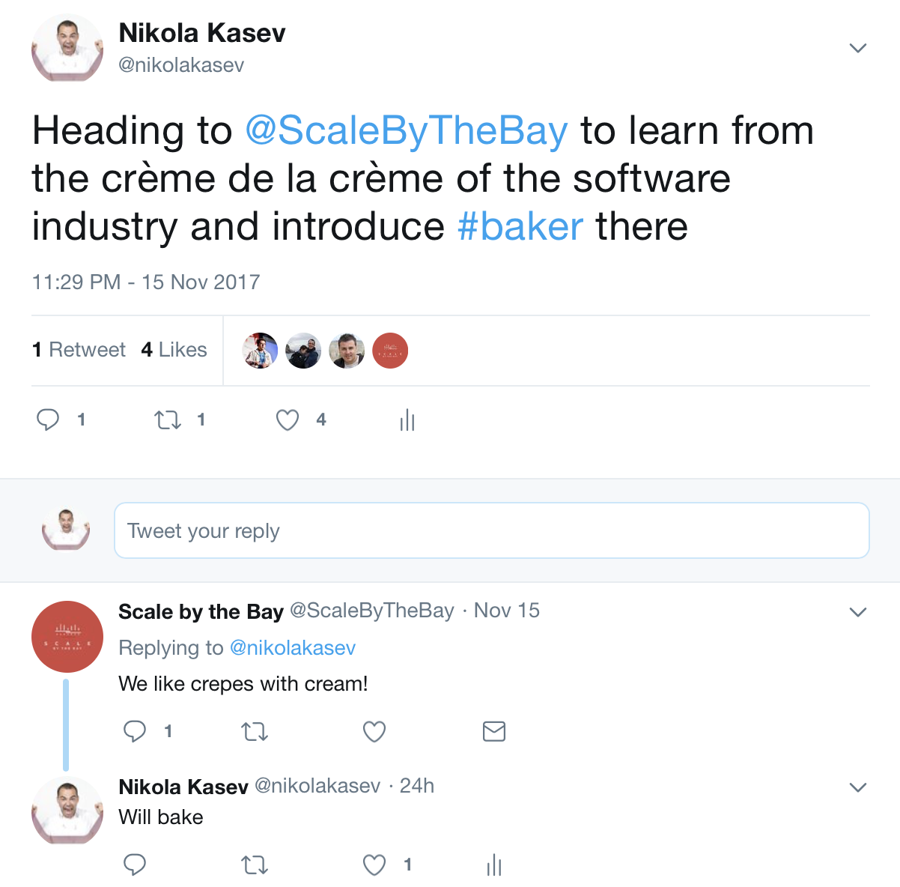

Declare, verify and execute microservices-based process flows with Baker
Scale By the Bay 2017, San Francisco
Nikola Kasev | ING Bank


Global Financial Institution in Over 40 Countries
Software Company with a Banking License
Microservices Architecture
Our Challenge
Interact with 12 Different Systems
A Flow of 27 Steps
From 2 minutes to 6 hours

Afraid to Change the Application Code

Functionality Breaks Unexpectedly

Slow Time to Market
How to Turn This Around?


Simplify
Domain Specific Language for Orchestration Flows
Declarative
Easy to Change

Recipes
Interactions
Ingredients
Events

Communicate
Visualize your code
Non-IT understand as well
Reason About Comfortably


Let's Cook Some Crêpes!
Good to Know
Short-lived vs. long-running flows
State is taken care of:
- Cassandra for persistent storage
- Ingredients encrypted by default
- State recovered automatically
When failure occurs:
- Baker retries technical failures with exponential backoff
- Works well with idempotent services
- Deal with functional failure in your recipe
Baker Capability Matrix:
- Investigate not one, not two, but all business processes in your company
- Where do you see re-use?
- Map using MoSCoW^4 to give importance (M = 10, S = 5, C = 2, W = 1)
| Checking Account | Savings Account | Customer Onboarding |
|---|---|---|
| Verify Identity | Verify Identity | Verify Identity |
| Register Individual | Register Individual | Register Individual |
| Open Checking Account | Open Savings Account | n/a |
| Issue Debit Card | n/a |
n/a |
| Send Message | Send Message | Send Message |
| Register Ownerhip | Register Ownership | n/a |

https://github.com/ing-bank/baker
Why Petri net?^3


Design-time
val registerIndividual = Interaction(
name = "RegisterIndividual",
inputIngredients = Seq(name, address),
output = FiresOneOfEvents(registerIndividualSuccessful, registerIndividualFailed)
)


val recipe = Recipe("OpenAccountRecipe")
.withInteractions(
assignAccount,
getAccount,
registerIndividual)

val recipe = Recipe("OpenAccountRecipe")
.withInteractions(
assignAccount,
getAccount.withRequiredEvent(termsAndConditionsAccepted),
registerIndividual)
.withSensoryEvents(
termsAndConditionsAccepted,
individualInformationSubmitted)

Run-time
//for each process instance, bake the recipe
baker.bake(processId);
//notify Baker when events occur
baker.processEvent(processId, individualInformationSubmitted.instance(name, address));
baker.processEvent(processId, termsAndConditionsAccepted.instance());
//retrieve ingredients stored in the accumulated state
assert(baker.getIngredients(processId).get("customerId").equals(customerId));
assert(baker.getIngredients(processId).get("iban").equals(iban));
//retrieve all events that have occurred
baker.events(processId)

val groceriesDone = new Event("GroceriesDone", Seq(milk, eggs, flour, butter, creme), Some(1))
val mixFirstThree = Interaction( name = "MixFirstThree", inputIngredients = Seq(milk, eggs, flour), output = FiresOneOfEvents(batterMixed) )
val mixFirstThreeImpl = mixFirstThree implement { (milk: String, eggs: String, flour: String) => println(s"mixing $milk, $eggs, and $flour") batterMixed.instance("batter") }
I love cooking food and for the rest of the talk I'll be using examples from there. It's very similar to our industry: long hours, hard work, and delivering experiences to our customers.
Have you been woken up at 3 o'clock in the morning on a Saturday morning after a night of partying, having to go to the war room and resolve an application incident. I've been there. When I remember the cold of the airconditioners, it still makes me shiver.
If we are building microservices or a monolith or any type of application in general we are serving business logic to our clients. So no matter what, we cannot escape the architectural discussion. If we are not careful of how we architect our applications we end up serving a bad meal to our clients.